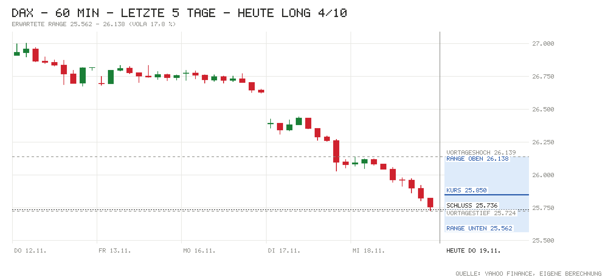

Tagesentscheidung ab 09:06 bis 17:30 Uhr
Den Ausschlag geben die US-Futures (S&P +1,00 %, Nasdaq +1,68 %) vor der Erstnotiz von Anthropic, das mit 83 USD über der Preisspanne platziert wurde, dazu ein um 2,9 % billigeres Brent und leicht tiefere Renditen. Die Erholung nach fast 5 % Korrektur vom Rekord dürfte bis zum Schluss halten (eigene Einschätzung). Wichtigstes Gegenargument: Der große Trend ist Bear, das Fed-Protokoll war falkenhaft und Hongkong fiel um 2 % – darum nur 4/10.
- Kurs um 09:06
- 25.850
- Erwartete Range
- 25.562 – 26.138
- Eingepreist (Tagesoption)
- ±1,12 %
Einschätzung vom Kurs um 09:06 (Median der Indikationen L&S, J.P. Morgan, UBS) bis zum Xetra-Schluss. Range = ±1 σ für die restliche Handelszeit aus der DAX-Tagesoption (ca. 68 %). Keine Anlageberatung.
Chart

Signale
| Signal | Wirkung | Stand und Einordnung |
|---|---|---|
| Vorgaben USA | Rückenwind | Mittwoch: S&P 500 −0,23 %, Nasdaq 100 +0,42 %, Dow −1,11 %; Nvidia trotz starker Zahlen −2,9 %. Futures jetzt S&P +1,00 %, Nasdaq +1,68 % vor der Anthropic-Erstnotiz. |
| Eröffnung & erste Minuten | Rückenwind | Indikation 25.850 (+0,44 % zum Xetra-Schluss 25.736,24). Erholungslücke, aber kleiner als bei den US-Futures. Eröffnung und Hoch/Tief zum Abruf n/v. |
| Asien & China | Gegenwind | Nikkei +0,71 %, Shanghai −0,28 %, CSI 300 +0,03 %, Hang Seng −2,02 % (4-Monats-Tief; US-Chipregeln, Tencent-Umsatz unter Erwartung). |
| Datenüberraschungen | Gegenwind | Zuletzt US-Einzelhandel 0,2 % vs. Prognose 0,1 %, CPI 0,4 % vs. 0,3 % – Inflationsdaten stützen weitere Fed-Erhöhungen. Heute früh keine deutschen Daten gefunden. |
| Zinserwartung | Gegenwind | Fed 09.12.: 110 % für +25 Bp., Januar 70 %. Protokoll: fast alle Mitglieder halten weitere Erhöhungen für nötig, einzelne brachten 50 Bp. ins Spiel. EZB-Einlagensatz 2,50 %. |
| Renditen | Rückenwind | Bund 10J 3,36 % (−2 Bp.), US 10J 5,07 % (rund −4 Bp. zum Vortag laut Yahoo; +9 Bp. in einer Woche). |
| Kreditstress | Neutral | FRED n/v; Ersatz: HYG +0,03 %, LQD +0,40 % – kein Stress. |
| Öl & Dollar | Rückenwind | Brent 89,28 USD (−2,90 %); EUR/USD 1,0984 (−0,08 %), Dollar nahe 19-Monats-Hoch – hilft Exporteuren. |
| Trend | Gegenwind | Unter 21-T.-Schnitt (26.018), über 50-T. (25.625) und 200-T. (24.996). Großer Trend Bear seit 17.11. – spricht gegen Long. |
| Positionierung | Neutral | COT 10.11.: Hedgefonds im S&P-Future netto −303.060 (+69.258), Asset Manager +914.130. Kein Extrem. |
| Unternehmensnachrichten | Rückenwind | Bund und UniCredit einig über Commerzbank-Übernahme; Siemens vorbörslich +0,97 %. Leicht positiv. |
| Profi-Sicht | Neutral | ING: höhere US-Realzinsen dominieren, Dollar bleibt fest; Treasury-Kurve flacher nach falkenhaftem Protokoll. |
| Termine bis 17:30 | Neutral | Kein Großtermin: 14:30 US-Erstanträge und Philly Fed; Anthropic-Erstnotiz am Nachmittag und Trump-Xi-Putin-Treffen als Taktgeber. |
Großer Trend (3-Monats-Momentum)
- Stand
- Bear
- Seit
- 17.11. (7 Wechsel in 3 Monaten)
- Schluss 18.11.
- −1,53 % vs. Zins +0,61 %
- Heute dreht es bei Schluss über
- 26.266 (jetzt −2,02 %)
Die Schwelle 26.266 liegt über der erwarteten Range – ein Dreh auf Bull schon heute ist unwahrscheinlich. Bull = Rendite der letzten 3 Monate über dem Geldmarktzins, Bear = darunter. Regel: Rendite der letzten 63 Handelstage (≈ 3 Monate) gegen den EZB-Einlagensatz, jeden Tag zum Schluss neu entschieden, Zeitrahmen Tageskerzen (nach Antonacci 2014, dort monatlich über 12 Monate; täglich entschieden dreht es öfter falsch). Keine Anlageberatung.
Bilanz von gestern
18.11.: Long 3/10 – Richtung falsch, −344 Punkte (Kurs zur Notiz 26.080, Schluss 25.736, Hoch 26.139, Tief 25.724). Range ±304 um den Kurs zur Notiz verfehlt (Bewegung −344); bisher 64 % von 11 Tagen getroffen (Soll ca. 68 %). Gesamt seit Start: 11 Einschätzungen, Richtung richtig 27 %, Summe −1.153 Punkte bis Schluss (Schnitt −105).
Marktlage
| Markt | Stand | Veränderung |
|---|---|---|
| DAX (Schluss 18.11.) | 25.736,24 | −1,19 % |
| DAX (Eröffnung heute) | n/v | n/v |
| DAX (jetzt, Kurs zur Notiz 09:06) | 25.850 | +0,44 % |
| S&P 500 (Schluss 18.11.) | 7.323,63 | −0,23 % |
| Nasdaq 100 (Schluss 18.11.) | 27.116,26 | +0,42 % |
| Dow Jones (Schluss 18.11.) | 50.198,17 | −1,11 % |
| US-Futures (S&P / Nasdaq) | 7.414,25 / 27.643,00 | +1,00 % / +1,68 % |
| Nikkei 225 | Eröffnung 59.025 → Schluss 59.444 | +0,71 % |
| Shanghai Composite | Eröffnung 3.583 → Schluss 3.578 | −0,28 % |
| CSI 300 | Eröffnung 3.972 → Schluss 3.985 | +0,03 % |
| Hang Seng | Eröffnung 23.050 → aktuell 22.823 | −2,02 % |
| EUR/USD | 1,0984 | −0,08 % |
| Brent (USD/Barrel) | 89,28 | −2,90 % |
| Gold (USD/Unze) | 3.732,40 | −0,25 % |
| VIX (Schluss 18.11.) | 24,56 | −3,53 % |
China: Festland kaum bewegt, Hongkong mit Tech-Ausverkauf (verschärfte US-Halbleiterregeln, Tencent-Umsatz unter Erwartung, falkenhaftes Fed-Protokoll); im Blick das Treffen Trump–Xi–Putin am Rande des APEC-Gipfels in Shenzhen. Farben bei Brent und VIX nach Wirkung auf Aktien. DAX-Eröffnung lag zum Datenabruf (Yahoo, bis 15 min verzögert) noch nicht vor.
Anleihen & Zinsen
| Markt | Stand | Veränderung |
|---|---|---|
| Bund 2J | 3,12 % | unverändert (vs. Bundesbank 18.11.: 3,12 %) |
| Bund 10J | 3,36 % | −2 Bp. (Vortagesschluss 3,38 %) |
| US-Treasury 2J | 4,80 % (live) | unverändert (offiziell 18.11.: 4,80 %) |
| US-Treasury 10J | 5,07 % (live) | rund −4 Bp. zum Vortag (Yahoo); 1 Woche (offiziell): +9 Bp. |
| Fed, Sitzung 09.12. | Erhöhung um 25 Bp. erwartet | 110 %; Jan. 70 %, März 71 % |
| EZB-Einlagensatz | 2,50 % | zuletzt +25 Bp. (16.09.) |
| Euro-Hochzins-Aufschlag | n/v (FRED) | n/v |
| US-Hochzins (Ersatz: HYG) | 76,65 USD | +0,03 % (Tag) |
Fed-Wahrscheinlichkeit über 100 % heißt: Der Markt preist für Dezember etwas mehr als 25 Bp. ein. Bund 2J: CNBC-Livekurs gegen Bundesbank-Vortageswert.
Termine heute
- ganztags Trump–Xi–Putin-Treffen am Rande des APEC-Gipfels in Shenzhen
- ganztags BASF: Kapitalmarkttag; Julius Bär: Q3-Umsatz; Sage: Jahreszahlen
- vormittags Anleiheauktionen Spanien (5,5 Mrd. €) und Frankreich (13,75 Mrd. €)
- 14:30 USA: Erstanträge Arbeitslosenhilfe – Prognose 197 Tsd. · zuvor 200 Tsd.; Philly-Fed-Index – zuvor 20,9
- nachmittags Anthropic: Erstnotiz an der Nasdaq (Kürzel ANT), Platzierung 83 USD; dazu Fed- und EZB-Redner
- nach 17:30 19:00 US-Auktion 10J-TIPS (19 Mrd. USD); 22:00 Hewlett Packard Enterprise Q4
- o. Zeit Walmart: Q3-Zahlen (laut älterer dpa-AFX-Vorschau, üblich vor US-Börsenstart)
Nachrichten zu DAX-Werten
- Commerzbank: Der Bund gibt seinen Widerstand gegen die Übernahme durch UniCredit auf. UniCredit sagt Standort, Arbeitnehmerrechte und Entscheidungen in Deutschland zu, der Bund verzichtet auf zwei Aufsichtsratssitze; Übernahme der Kontrolle Anfang 2027. Einschätzung: Unsicherheit weg, Übernahmeprämie aber großteils im Kurs – leicht positiv.
- BASF: Kapitalmarkttag heute. Einschätzung: Ziele und Ausschüttung bestimmen die Reaktion, offen.
- Siemens: Vorbörslich bei L&S 268,58 Euro (+0,97 %). Einschätzung: positiv, profitiert von der Tech-Erholung.
- Deutsche Bank: Nach dem Datenleck-Kursrutsch zu Wochenbeginn weiter unter Druck, nun auch mit KI-Sorgen als Thema. Einschätzung: bleibt anfällig für Schlagzeilen.
- SAP / Siemens Energy / Infineon (Umfeld): Anthropic wurde mit 83 USD über der Spanne 70–78 USD platziert (rund 107 Mrd. USD Erlös laut Bericht, Bewertung rund 1,5 Bio. USD); Nvidia fiel gestern trotz starker Zahlen um 2,9 %. Einschätzung: gelingt das Debüt, profitieren KI-nahe DAX-Werte; ein schwacher Start würde den Tech-Ausverkauf verlängern.
Profi-Sicht & Positionierung
- ING THINK: US-2J-Realzinsen über 2,40 %, höchster Stand seit 2023; ING erwartet einen festeren Dollar und sieht für EUR/USD weiter Risiken Richtung 1,0880 – die Wende im Dollartrend kaum vor Mitte Dezember (FX Daily). Die Treasury-Kurve wurde nach dem falkenhaften Protokoll flacher; die EZB könnte im Dezember die Mindestreserve von 1 % auf 2 % verdoppeln, was rund 175 Mrd. € Überschussliquidität bindet (Rates Spark).
- Positionierung (COT, Stand 10.11.): Hedgefonds im S&P-Future netto −303.060 (+69.258, Short-Abbau), Asset Manager +914.130 (−14.454); Treasuries: Hedgefonds bauen Short aus (−39.017); Euro: Asset Manager netto +165.477 (+20.552). Kein Extrem.
Quellen
- Marktdaten per Skript: Amber Terminal / Yahoo Finance (Kurse, Futures, HYG/LQD), onvista (Indikationen, VDAX), Eurex (DAX-Tagesoption ODAP), Nasdaq (Kalender, heute leer), CNBC / Bundesbank / US-Treasury (Renditen), CFTC (COT), ING THINK; FRED (Kreditaufschläge) nicht erreichbar
- onvista: Dax höher erwartet – Anthropic und Trump-Xi-Putin-Treffen im Blick
- dpa-AFX: Aktien Frankfurt Ausblick – Erholungsversuch, Anthropic-IPO hebt Tech-Laune
- dpa-AFX: Börsentag auf einen Blick – Dax stabilisiert nach Kursrutsch
- Handelsblatt: Bundesregierung und UniCredit einigen sich bei Commerzbank-Übernahme
- ad-hoc-news: Siemens-Aktie vorbörslich 0,97 % höher
- StockTitan: Stock Market Today, November 18, 2026
- Newsbytes: Hang Seng hits 4-month low as US tightens semiconductor rules
- dpa-AFX: Wochenvorschau – Termine bis 2. Dezember 2026
- ING THINK: FX Daily – Higher US real rates dominate
- ING THINK: Rates Spark – ECB reserve rethink would bring funding pressure closer